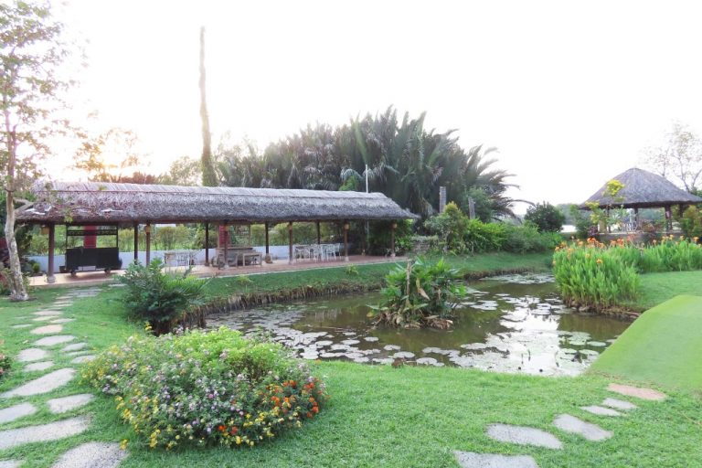
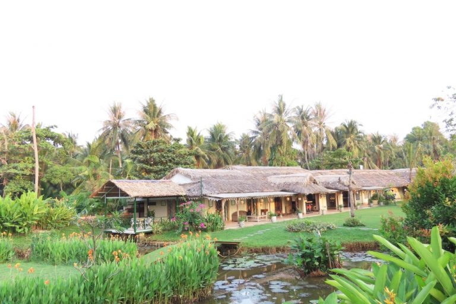
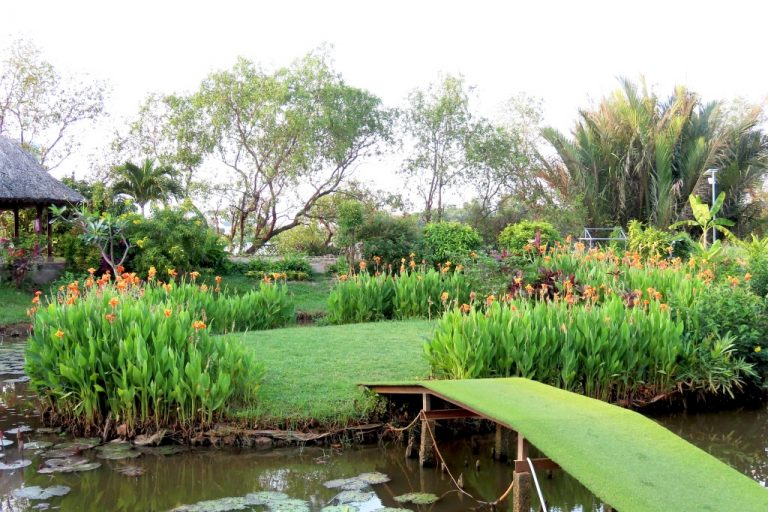
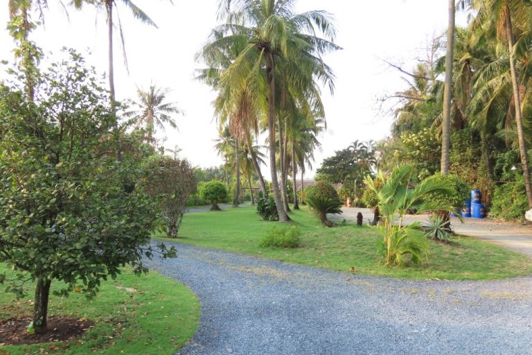
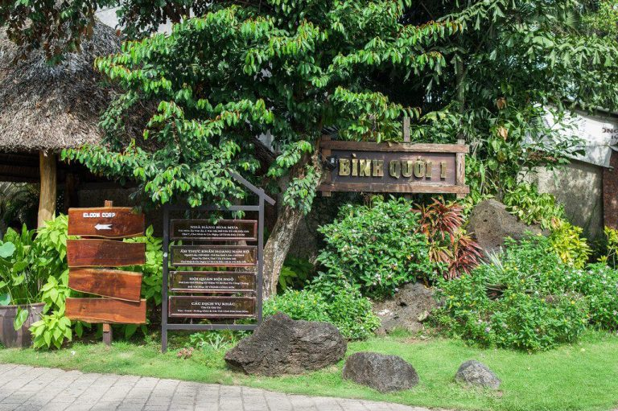
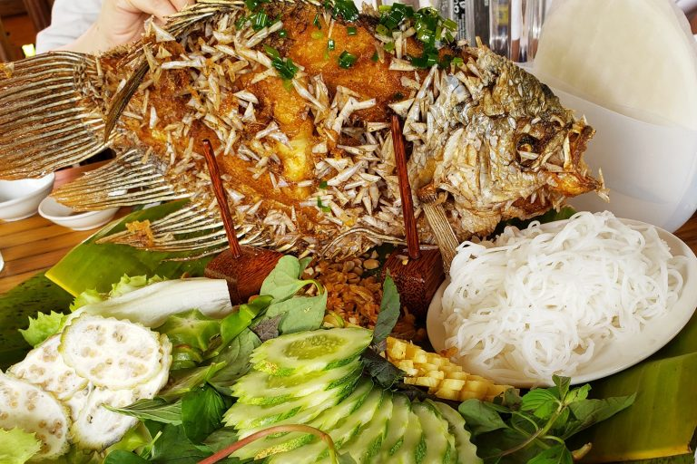
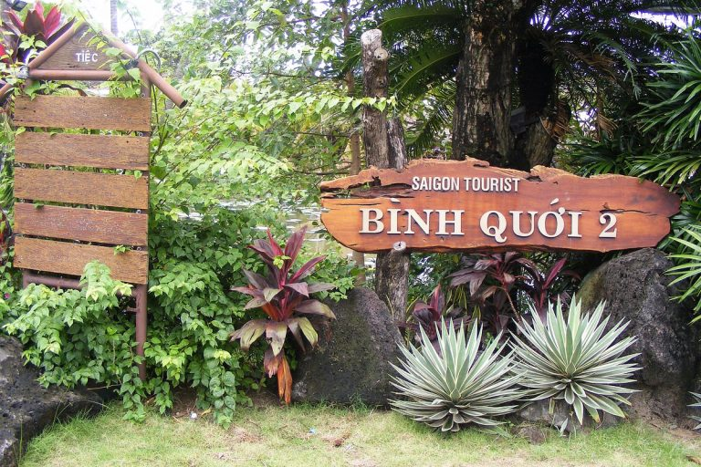
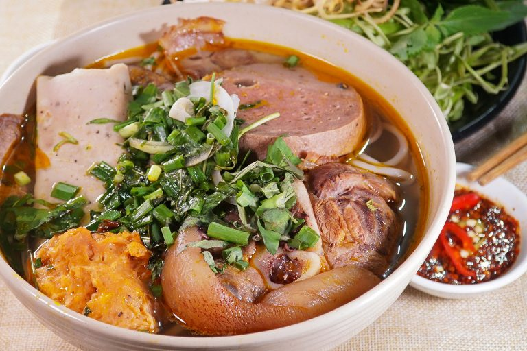
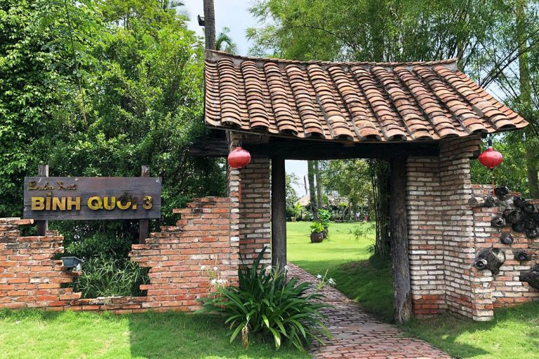
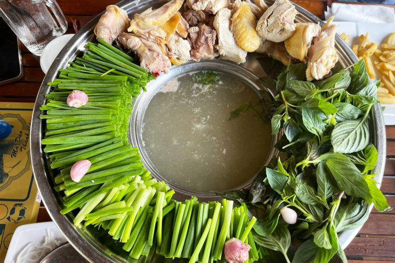

Khó ai có thể tưởng tượng được rằng giữa chốn Sài Gòn phồn hoa vẫn còn sót lại một vùng quê yên bình với nhà tranh, vách lá, con kênh, hàng dừa. Khu du lịch Bình Quới là sự lựa chọn hoàn hảo cho những bạn muốn tìm lại một chút yên bình sau những tháng này bôn ba vất vả. Cùng Go2Joy tìm hiểu thêm ngôi làng nên thơ này nhé.
Khu du lịch Bình Quới tọa lạc ở bán đảo Thanh Đa, đường Bình Quới, Phường 28, Quận Bình Thạnh, TP.Hồ Chí Minh. Khu du lịch này có tổng cộng 3 chi nhánh khác nhau cùng nằm trên đường Bình Quới, địa chỉ cụ thể của từng nơi là:
Đến với tổ hợp khu du lịch này, bạn sẽ được trải nghiệm cảm giác nghỉ dưỡng ở miền quê thanh bình, nên thơ. Hòa mình vào thiên nhiên với hàng dừa nghiêng nghiêng soi bóng dưới dòng kênh, bên cạnh là những căn nhà tranh vách lá truyền thống. Không náo nhiệt như những khu vui chơi khác, khu du lịch Bình Quới mang đậm nét dân dã, mộc mạc của làng quê Nam Bộ nên thơ.
Nhờ nằm ngay bên cạnh sông Sài Gòn nên không gian vô cùng thoáng đãng và lộng gió. Dù không có quạt hay máy lạnh thì không khí ở đây vẫn luôn mát mẻ. Khu du lịch này cũng thường xuyên tổ chức những lễ hội văn hóa ẩm thực như: Khám phá văn hóa ẩm thực dân gian Việt Nam, Đất phương Nam, Hạt lúa quê tôi, Về quê ăn Tết, Hương vị quê nhà.
Trong 3 địa chỉ thì chỉ có khu du lịch Bình Quới 1 là cần phải mua vé và mức phí sẽ là 130.000 VNĐ/vé người lớn, 90.000 VNĐ/vé trẻ em. Khu du lịch Bình Quới 2, 3 đều miễn phí vé vào cổng nên bạn có thể chọn tham quan một trong hai khu này để tiết kiệm chi phí nhé.
Bạn có thể mua thêm vé ăn buffet nếu có nhu cầu, giá vé ở mỗi khu du lịch sẽ có sự chênh lệch một chút. Trước khi sử dụng dịch vụ ở đây thì bạn có thể tham khảo bảng giá để đưa ra sự lựa chọn phù hợp nhé.
Thời điểm lý tưởng nhất để đến khu du lịch Bình Quới là những ngày cuối tuần: thứ 6, thứ 7 và chủ nhật. Vào khoảng thời gian này, khu du lịch thường tổ chức những hoạt động rất thú vị như trải nghiệm ẩm thực Nam Bộ, tham gia lễ hội truyền thống,…
Ngoài ra, những ngày cuối tuần cũng là dịp để bạn nghỉ ngơi thư giãn, nên chọn ngôi làng này để tìm bình yên là sự lựa chọn hoàn hảo nhất rồi.
Đây có lẽ là câu hỏi khiến nhiều du khách đắn đo khi có quyết định tham quan khu du lịch này. Dù nằm trên một cung đường những mỗi chi nhánh sẽ có vẻ đẹp khác nhau, mang đến cho bạn những trải nghiệm mới lạ.
Bạn có thể lựa chọn tham 1 trong 3 khu du lịch trên, và Go2Joy chắc chắn là bạn sẽ quay lại để khám phá thêm những chi nhánh còn lại.
Với tổng diện tích lên đến hơn 34.000m2, khu du lịch Bình Quới 1 tái hiện gần như hoàn hảo cuộc sống yên bình ở vùng sông nước. Bạn sẽ dễ dàng bị thu hút bởi những hàng dừa xanh mướt, những chiếc cầu khỉ gập ghềnh hay những con xuồng ba lá mộc mạc.
Khu du lịch cũng là nơi dừng chân hoàn hào cho những tâm hồn yêu văn thơ, âm nhạc. Khu du lịch này cũng thu hút du khách bởi Hội quán Hội Ngộ – nơi mà cố nhạc sĩ Trịnh Công Sơn đặt tên và thường ghé đến. Sau này, hội quán được đổi tên thành Nhà lưu niệm Trịnh Công Sơn để tưởng nhớ cố nhạc sĩ tài năng.
Khi đến Bình Quới 1, bạn có thể chọn ăn ở nhà hàng Hoa Mua hoặc nhà hàng Hoa Sim đều được. Các món ăn tại đây đa số là những món đặc sản của vùng sông nước nên các bạn không cần phải đi đâu xa xôi để tìm kiếm hương vị đặc trưng ấy nữa.
Ngoài ra, bạn cũng có thể chọn ăn buffet để thoải mái thưởng thức tất cả các món ăn hấp dẫn nhất của Tây Nam Bộ. Với diện tích lên đến 3000m2, nhà hàng này có thể phục vụ mọi du khách đến tham quan Bình Quới 1. Các món ăn đặc trưng ở đây phải kể đến: cá lóc nướng trui, gà nướng ngũ vị, cánh gà nướng sả, ốc bươu nướng tiêu, cháo cá lóc rau đắng,bánh xèo Nam Bộ, thịt heo xiên nướng, bánh khọt, bánh hỏi heo quay,…
Giá vé buffet ở khu du lịch Bình Quới 1: 270.000 VNĐ/ vé người lớn, 150.000 VNĐ/ vé trẻ em
Thời gian mở cửa:
Để đến được khu du lịch Bình Quới 2, bạn chỉ cần di chuyển khoảng 30 phút từ trung tâm thành phố là có thể đến được vùng quê yên bình và thơ mộng. Điểm thú vị tại khu du lịch này là bạn có thể đến đây bằng tàu. Bạn có thể đi tàu từ bến Bạch Đằng đến Bình Quới 2, thời gian di chuyển sẽ khoảng 1 giờ. Lúc này bạn có thể thoải mái ngắm cảnh sông nước cực “chill”.
Khi tới khu du lịch này, bạn có thể thoải mái tham gia các trò chơi cực đặc sắc như: bơi lội, bóng bàn, tennis, bida, lướt ván, câu cá,… Nếu bạn muốn tận hưởng trọn vẹn những ngày nghỉ yên bình hòa mình vào thiên nhiên thì có thể chọ staycation tại những căn bungalow ở đây nhé. Dù theo concept thiên nhiên nhưng các phòng nghỉ tại đây vẫn đầy đủ tiện nghi.
Từ nhà hàng Bình Quới 2, bạn có thể vừa ngắm nhìn sông Sài Gòn lộng gió vừa tận hưởng những món ăn cực thơm ngon. Những món chủ đạo tại đây đều mang nét đặc trưng miền biển. Những buổi buffet mang chủ đề “Món ngon xóm Chài” được nhiều thực khách yêu thích bởi sự đa dạng.
Các món hải sản tươi sống được chế biến cầu kỳ, mang đến những món ăn thơm ngon cho thực khách như: nghêu hấp thái, sò điệp nướng mỡ hành, tôm nướng muối ớt, mực trứng rang muối, lẩu cá bớp,… Ngoài ra, các món ăn dân dã cũng rất hấp dẫn: gỏi ngũ sắc, lẩu mắm, gà quay lu,…
Giá vé buffet ở khu du lịch Bình Quới 2: 270.000 VNĐ/ vé người lớn, 140.000 VNĐ/ vé trẻ em
Thời gian mở cửa:
Nếu có dịp đến khu du lịch Bình Quới 3 chắc chắn bạn sẽ yêu thích khung cảnh làng quê chân chất mộc mạc nơi đây. Các cảnh vật từ hàng dừa hai bên bờ, bãi cỏ xanh ngắt cho đến hồ nước rộng lớn đều gợi cho bạn cảm giác bình yên quen thuộc đến lạ thường.
Có thể nói khu du lịch Bình Quới 3 là một tọa độ vô cùng tuyệt với để tổ chức các bữa tiệc, cắm trại ngoài trời vào những ngày nghỉ cuối tuần. Nơi đây hứa hẹn sẽ mang đến cho bạn những kỷ niệm đáng nhớ cùng gia đình và bạn bè.
Không chỉ sở hữu những cảnh quan tuyệt đẹp mà khu du lịch Bình Quới 3 còn là thiên đường ẩm thực mang đậm phong vị dân dã miền Tây. Bình Quới 3 có hệ thống nhà hàng rộng lớn với menu vô cùng đa dạng và phong phú thu hút nhiều du khách đến trải nghiệm.
Nhắc đến món ăn đặc trưng tại Bình Quới 3 thì không thể nhắc đến có món lẩu thơm ngon bắt miệng được chính tay các đầu bếp có tay nghề cao thực hiện. Bên cạnh đó nhà hàng còn có phục vụ cả các món Âu để phục vụ nhu cầu đa dạng hơn của nhiều thực khách.
Vậy là chúng ta đã cùng tìm hiểu đôi nét về khu du lịch Bình Quới với nhiều các hoạt động ăn uống vui chơi vô cùng thú vị. Nếu trong thời gian sắp tới bạn đang có kế hoạch tiếp tục khám phá các địa điểm ăn chơi thú vị ở Sài Gòn mà chưa biết nghỉ ngơi ở đâu thì hãy tải ứng dụng đặt phòng BookingHotel để chọn ngay cho mình một căn phòng thật ưng ý nhé !